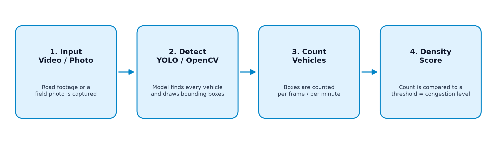
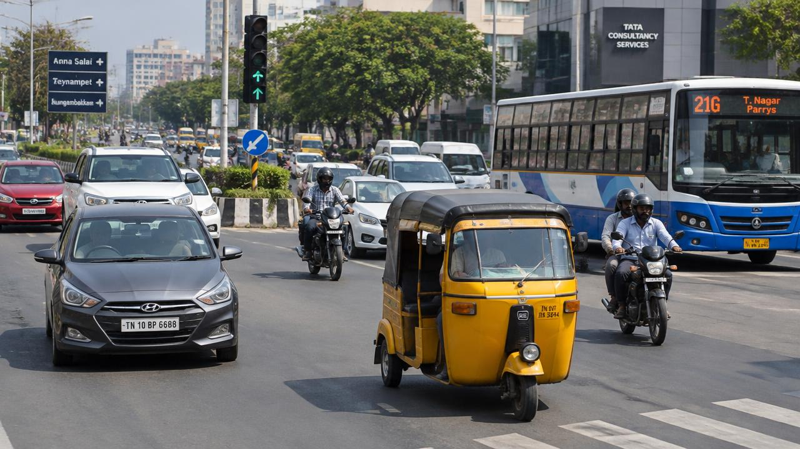
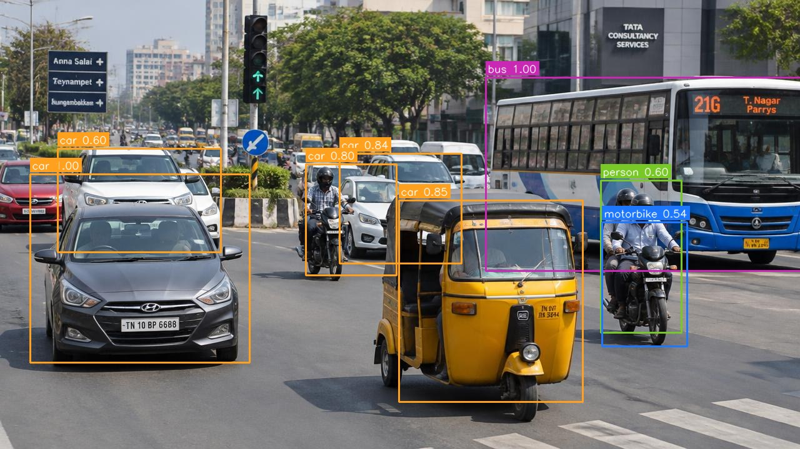

Input — video or photo
The pipeline starts with road footage or a photo — in our case a short clip and a still frame captured at our local junction. No live stream, no server needed.
Explainer
Object-detection models like YOLO look at a road frame the same way a traffic constable does — spot every vehicle, note its position, keep counting. Here is the full pipeline in four steps.

Illustrative 4-step workflow diagram, rendered with Python (Matplotlib).
The pipeline starts with road footage or a photo — in our case a short clip and a still frame captured at our local junction. No live stream, no server needed.
A pre-trained object-detection model scans the frame and draws a bounding box around every vehicle it recognises — cars, buses, motorcycles and more.
Each box is one vehicle. The script counts the boxes per frame or per minute, giving an objective vehicle count without anyone standing by the road.
The count is compared against a threshold. Below it the road flows smoothly; above it the junction is congested. That simple score powers our demo slider.
Below is the original road frame beside the same frame after our Python script ran object detection on it — 8 vehicles detected with confidence scores.


Bounding boxes produced by running a pre-trained detection model with OpenCV on a sample road frame — not a live feed.